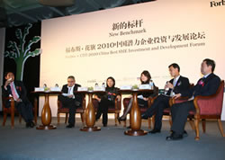
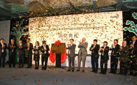
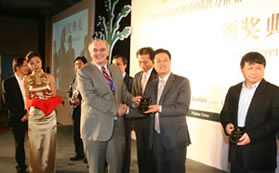
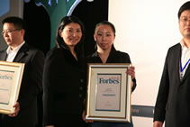

本场嘉宾：
圆桌主席： 周健工《福布斯》中文版总编辑
阎 焱 赛富基金 首席合伙人
熊晓鸽 IDG资本 创始合伙人
邱子磊 崇德基金CEO、创始合伙人
徐 新 今日资本 创始合伙人（女）
福布斯中国潜力企业投资与发展论坛演讲嘉宾
周健工
《福布斯》中文版总编辑
《福布斯》中文版总编辑
范鲁贤
福布斯上海分社社长
福布斯上海分社社长
欧兆伦
花旗银行 (中国) 有限公司董事长、花旗中国首席执行官
花旗银行 (中国) 有限公司董事长、花旗中国首席执行官
丁远
中欧国际工商学院 教授
中欧国际工商学院 教授
圆桌对话一：中国市场最具投资价值与发展潜力的产业机会

周健工
阎焱
熊晓鸽
邱子磊
徐新
圆桌对话二：产业创新新思路

本场嘉宾：
圆桌主席 邵 俊 德同资本 创始合伙人
冯 涛 永宣投资 总 裁
汝林琪 凯鹏华盈 执行合伙人 （女）
刘慧琴 睿稚集团（天才宝贝） 首席执行官（女）
张毅斌 维络城董事长兼总经理
何鲁敏 亚都科技董事长
圆桌主席 邵 俊 德同资本 创始合伙人
冯 涛 永宣投资 总 裁
汝林琪 凯鹏华盈 执行合伙人 （女）
刘慧琴 睿稚集团（天才宝贝） 首席执行官（女）
张毅斌 维络城董事长兼总经理
何鲁敏 亚都科技董事长
邵俊
冯涛
汝林琪
刘慧琴
张毅斌
何鲁敏
圆桌对话三：潜力企业融资新思路
本场嘉宾：
圆桌主席：张之皓 花旗银行（中国）有限公司副行长
黄 健 昆山市 副市长
唐 葵 方源资本 总 裁
王 刚 维思资本 创始合伙人
栾润峰 金和软件 董事长
孟广银 瑞星集团 董事长
黄 劲 安博教育集团 董事长
圆桌主席：张之皓 花旗银行（中国）有限公司副行长
黄 健 昆山市 副市长
唐 葵 方源资本 总 裁
王 刚 维思资本 创始合伙人
栾润峰 金和软件 董事长
孟广银 瑞星集团 董事长
黄 劲 安博教育集团 董事长
张之皓
黄健
唐葵
王刚
栾润锋
孟广银
黄劲
圆桌对话四：创业板的成功之道
本场嘉宾：
圆桌主席：周健工 《福布斯》中文版 总编辑
李 野 宇星科技总裁
徐国胜 茁壮网络董事长
余 新 中科电器董事长（女）
李万寿 深创投集团总裁
肖 冰 达晨创投 总裁
程厚博 东方富海 总裁
圆桌主席：周健工 《福布斯》中文版 总编辑
李 野 宇星科技总裁
徐国胜 茁壮网络董事长
余 新 中科电器董事长（女）
李万寿 深创投集团总裁
肖 冰 达晨创投 总裁
程厚博 东方富海 总裁
周健工
李野
徐国胜
余新
李万寿
肖冰
程厚博
圆桌对话五：从创业到10亿
本场嘉宾：
圆桌主席：刘瑞明 《福布斯》中文版执行主编
赵 民 正略钧策董事长，新华信董事长
罗田安 克莉丝汀股份有限公司 董事长
汪静波 诺亚财富 首席执行官
杨兴平 上海自然道信息科技公司 总裁
张恭运 山东豪迈机械 董事长
李 平 北京东土科技股份有限公司
圆桌主席：刘瑞明 《福布斯》中文版执行主编
赵 民 正略钧策董事长，新华信董事长
罗田安 克莉丝汀股份有限公司 董事长
汪静波 诺亚财富 首席执行官
杨兴平 上海自然道信息科技公司 总裁
张恭运 山东豪迈机械 董事长
李 平 北京东土科技股份有限公司
刘瑞明
赵民
罗田安
汪静波
杨兴平
张恭运
李平
圆桌对话六：家族企业管理模式突破
本场嘉宾：
圆桌主席：康 健 《福布斯》中文版 副主编
张晖明 复旦大学企业研究所 所长
姚继平 普凯投资主管合伙人
郭廷志 福建正大集团董事长
郭敬清 福建正大集团总经理
陈碧华 克缇（中国）集团总经理
陈富国 Interbrand（中国）首席执行官
圆桌主席：康 健 《福布斯》中文版 副主编
张晖明 复旦大学企业研究所 所长
姚继平 普凯投资主管合伙人
郭廷志 福建正大集团董事长
郭敬清 福建正大集团总经理
陈碧华 克缇（中国）集团总经理
陈富国 Interbrand（中国）首席执行官
康健
张晖明
姚继平
郭廷志
郭敬清
陈碧华
陈富国
“福布斯中国增长俱乐部”揭幕启动仪式



2009“福布斯中国最佳创业投资人”及2010“福布斯中国潜力企业颁奖典礼”现场


晚宴花絮
|
|